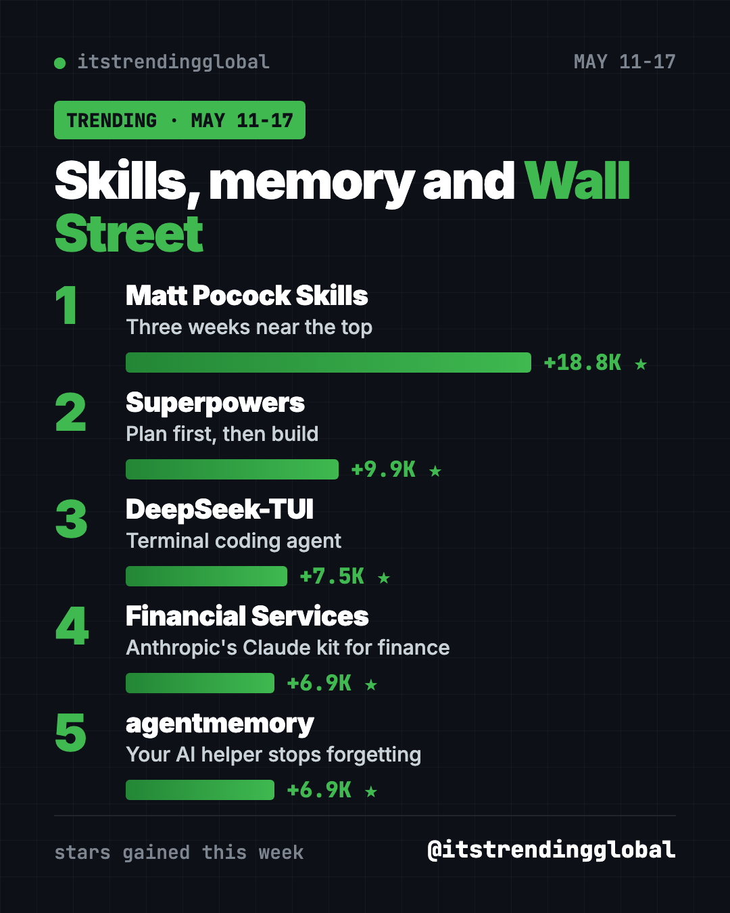

Home › Top repos › GitHub trending this week
Popular GitHub Repos May 11 2026: Skills, Memory, Finance
- Top repos
- Published 2026-10-15
- 6 min read
- Updated 2026-10-16
- By the It's Trending Global team
Popular GitHub repos May 11 2026: Matt Pocock's skills, Superpowers, DeepSeek-TUI, Anthropic's Claude kit for finance and agentmemory, explained.
The popular GitHub repos May 11 2026 brought were led by Matt Pocock's skills for a second time, with about 18,800 new stars. Superpowers returned in second place, and DeepSeek-TUI held on in third.
The new names were Anthropic's own finance kit for Claude and agentmemory, a memory add-on for AI coding helpers. Both tied at about 6,900 stars.
Key takeaways
- Matt Pocock Skills was in the top two for a third straight week.
- Superpowers came back after a break. It still teaches AI helpers to plan first.
- DeepSeek-TUI, now named Codewhale, kept growing after its big week.
- Financial Services is Anthropic's official set of Claude agents for banking, research and wealth work.
- agentmemory gives AI coding helpers a memory that lasts between sessions.

How they compare
| Repo | What it does | Best for | Stars this week | License |
|---|---|---|---|---|
| Matt Pocock Skills | Small skills for real engineering | Developers | +18.8K | MIT |
| Superpowers | Makes AI plan, test and review | Claude Code users | +9.9K | MIT |
| DeepSeek-TUI (Codewhale) | Terminal coding agent | Command-line fans | +7.5K | MIT |
| Financial Services | Claude agents and skills for finance | Finance teams | +6.9K | Apache-2.0 |
| agentmemory | Long-term memory for AI coders | Daily AI helper users | +6.9K | Apache-2.0 |
Star gains cover May 11 to 17, 2026. Totals were checked on GitHub on October 16, 2026.
1. Matt Pocock Skills: three weeks near the top
Stars: +18.8K this week · about 293K total now
What it is: A set of skills that TypeScript teacher Matt Pocock uses daily. He built them to stay small, so you keep control instead of handing it to a big framework. You can install them as a plugin that updates itself, or copy them in and edit by hand.
Who it's for: Developers who want sensible habits for AI helpers.
Everyday use: Ask your AI to grill you with questions about a feature before it writes a plan.
Install it: In Claude Code:
claude plugin install mattpocock-skills@claude-plugins-official
Or ask your AI helper:
Install mattpocock/skills and show me the list of skills with one plain sentence each.
See Matt Pocock Skills on GitHub · Read our full guide
2. Superpowers: the planning habit returns
Stars: +9.9K this week · about 300K total now
What it is: A skill pack that makes your AI coding helper act like a careful engineer. It asks what you are really trying to do, writes a short spec, makes a step-by-step plan, and then works through it with helper agents.
Who it's for: Anyone who wants fewer surprises from AI-written code.
Everyday use: Ask for a recipe-sharing page and approve the plan before any code appears.
Install it: In Claude Code:
/plugin install superpowers@claude-plugins-official
Or ask your AI helper:
Install Superpowers from github.com/obra/superpowers and use it to plan one small feature with me.
See Superpowers on GitHub · Read our full guide
3. DeepSeek-TUI: still climbing
Stars: +7.5K this week · about 41K total now
What it is: An open coding agent for the terminal. It reads projects, edits files and runs commands. It began with DeepSeek's models; renamed Codewhale, it now works with many providers and local models.
Who it's for: Developers who prefer the keyboard and want free, open tools.
Everyday use: Ask it to explain an unfamiliar project in five bullet points.
Install it:
curl -fsSL https://codewhale.net/install.sh | sh
Or ask your AI helper:
Install Codewhale from github.com/codewhale-hq/Codewhale and summarize this project for me.
See DeepSeek-TUI (now Codewhale) on GitHub
4. Financial Services: Anthropic's Claude kit for finance
Stars: +6.9K this week · about 40K total now
What it is: Anthropic's official set of agents, skills and data connectors for finance work. It covers investment banking, equity research, private equity and wealth management. Agents include a Pitch Agent and a Market Researcher. You install them in Claude Cowork or Claude Code.
Who it's for: Analysts and finance teams who already use Claude.
Everyday use: Draft a first-pass company comparison table for a human analyst to check.
Install it: In a terminal with Claude Code:
claude plugin marketplace add anthropics/financial-services
claude plugin install financial-analysis@claude-for-financial-services
Or ask your AI helper:
Add the anthropics/financial-services marketplace and install only the financial-analysis plugin.
⚠️ Heads up: The README says nothing in it is investment, legal, tax or accounting advice. The agents draft work for a qualified professional to review. We are not financial advisors either.
See Financial Services on GitHub
5. agentmemory: an AI helper that remembers
Stars: +6.9K this week · about 30K total now
What it is: A memory server for AI coding helpers like Claude Code, Cursor, Codex and Gemini CLI. It saves what happened in past sessions and brings back the useful parts, so you stop re-explaining your project.
Who it's for: People who use one or more AI coding helpers every day.
Everyday use: Start Monday's session and have your helper recall Friday's decisions.
Install it: You need Node.js 20 or newer.
npx -y @agentmemory/agentmemory@latest
The first run asks which AI helpers to connect.
Or ask your AI helper:
Install agentmemory from github.com/rohitg00/agentmemory and connect it to Claude Code only.
Which one should you try first?
- One quick upgrade for Claude Code: Superpowers or Matt Pocock Skills. Choose one.
- Tired of re-explaining your project: agentmemory.
- A free terminal coding agent: Codewhale.
- You work in finance and use Claude: Financial Services, with a human checking every output.
💡 Tip: Memory tools store notes about your work on your machine. Skim what they saved now and then, and delete anything private.
For the full month, see the best GitHub repos of May 2026 and May 2026 in AI news. The week before is May 4 to 10; next is May 18 to 24.
FAQ
What were the popular GitHub repos the week of May 11, 2026?
Matt Pocock Skills, Superpowers, DeepSeek-TUI, Anthropic's Financial Services and agentmemory.
Is the Financial Services repo really from Anthropic?
Yes. It is published under the official anthropics account on GitHub with an Apache-2.0 license.
Do I need Claude to use the finance agents?
Yes. They are built for Claude Cowork, Claude Code or Anthropic's Managed Agents, which are paid services.
What does agentmemory remember?
Notes from your past AI sessions, such as decisions and fixes. It brings back the relevant ones when you start a new session.
Are these free?
The code is free and open source. The AI services they connect to may charge.
Want a new free tool explained every day? Follow @itstrendingglobal on Instagram.
Keep reading

Trending GitHub Repos October 2026: The Top 5 So Far
The trending GitHub repos of October 2026 so far: a free Photoshop-style editor, an AI art studio, a big AI model for gaming PCs and more, explained.

Trending GitHub Repos This Week, Oct 5 2026: The Top 5
Trending GitHub repos this week Oct 5 2026: Matt Pocock's skills, the openGym workout tracker, e2e testing, HyperFrames video and claude-mem memory.

GitHub Trending September 28, 2026: Hindsight and Paperclip
GitHub trending September 28 2026: Hindsight, Paperclip, NVIDIA's OpenShell and a free 542-lesson AI course, with setup steps for each.